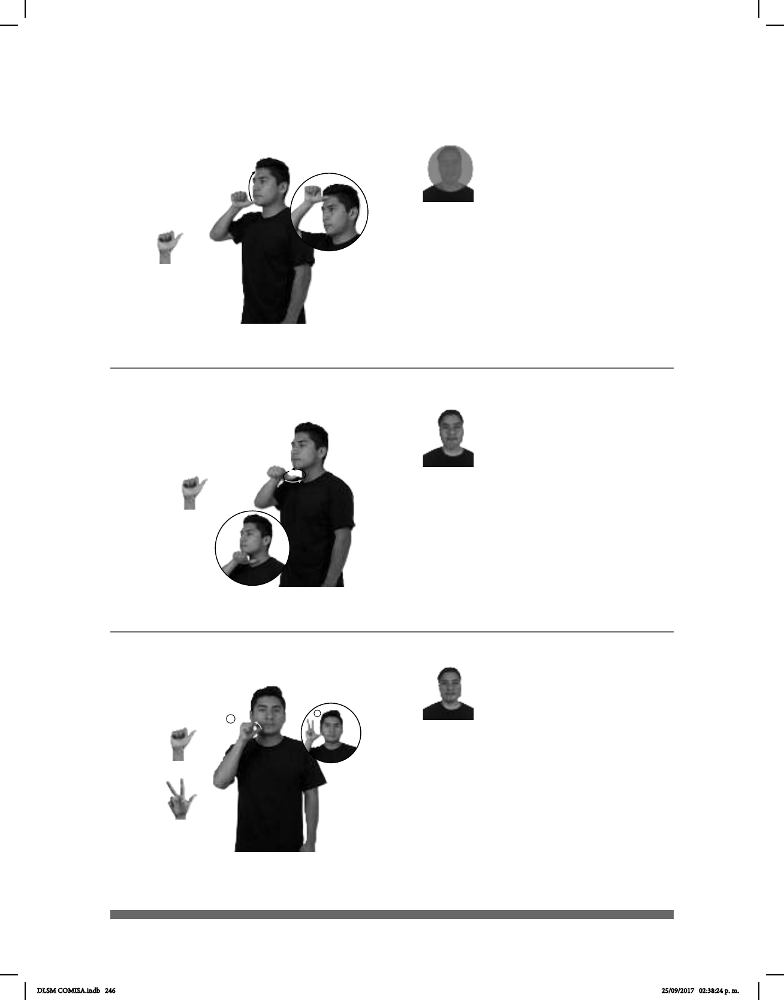

246
(A-40)
(A-41)
ALGUNAS PERSONAS ANALFABETO
Algunas personas son analfabetas.
ANCIANO
pro-ÉL ACONSEJAR A-MÍ pro-YO OBEDECER
El anciano me da consejos que yo obedezco.
1
2
(A-42)
t-ANTIER PALACIO-DE-LOS-DEPORTES dm-MAGNETO CANTAR AUDITORIO
allá
pro-YO IR
Antier fui a un concierto de Magneto en el Palacio de los Deportes.
Seña: SM
A.1
Palma hacia afuera.
Inicia sobre la barbilla
y termina sobre la frente.
La mano se mueve
formando un arco.
adj. Que no sabe leer ni
escribir.
Seña: SM
A.1
Palma hacia abajo.
A la altura del cuello.
La mano se mueve
formando círculos hacia enfrente.
sust. y adj. Persona
representante de la religión de los
Testigos de Jehová similar al pastor.
La seña se usa en la
comunidad sorda del Testigo de
Jehová.
Seña: SM
Seña que pasa de
A.1 a 8.1
Palma hacia afuera.
Inicia sobre la barbilla
y termina sobre la sien.
La mano se mueve
formando un arco.
adv. El día que precede
inmediatamente al de ayer.
DLSM COMISA.indb 246 25/09/2017 02:38:24 p. m.